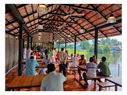

Introduction
Social Kitchen is a concept that has gained popularity in recent years, blending cooking, dining, and social interaction into a communal experience. Here are some key aspects and features:
- Community Engagement: It fosters a sense of community by bringing people together through food and cooking.
- Shared Space: It often involves shared kitchen spaces where individuals or groups can cook, learn, and dine together.
- Cooking Classes: Social Kitchens frequently offer cooking classes where participants can learn new culinary skills from chefs or experienced cooks.
- Interactive Learning: Participants engage in hands-on learning experiences, exploring different cuisines and techniques.
- Culinary Exploration: It encourages exploration of diverse foods and flavors, promoting culinary diversity and appreciation.
- Cultural Exchange: Participants from different cultural backgrounds can share their culinary traditions and heritage.
- Team Building: It's used for team-building exercises in corporate settings, fostering collaboration and communication among colleagues.
- Health and Nutrition: Some Social Kitchens focus on promoting healthy eating habits and nutrition education.
- Creative Expression: It allows for creativity in cooking and meal presentation, encouraging participants to express themselves through food.
- Inclusive Environment: It strives to create an inclusive environment where everyone feels welcome regardless of their cooking skills or background.
- Networking Opportunities: Participants can network and connect with others who share similar interests in food and cooking.
- Event Space: Social Kitchens may double as event spaces for private gatherings, parties, or celebrations.
- Environmental Consciousness: Some Social Kitchens promote sustainability by using local ingredients, reducing food waste, or promoting eco-friendly practices.
- Community Support: They may engage in community outreach programs, such as cooking for those in need or supporting local food banks.
- Family-Friendly Activities: Some Social Kitchens offer family cooking classes or activities, promoting bonding through shared culinary experiences.
- Virtual Platforms: In the digital age, virtual Social Kitchens have emerged, allowing participants to cook and connect online.
- Pop-up Events: Social Kitchens often host pop-up events in different locations, bringing their concept to diverse communities.
- Celebrity Chefs and Guests: They may feature appearances or collaborations with renowned chefs, adding a special element to the experience.
- Educational Workshops: Beyond cooking, they may offer workshops on topics like food photography, wine pairing, or kitchen gardening.
- Continuous Learning: Participants often leave with new skills, recipes, and a deeper appreciation for the social aspects of food and cooking.
Ambience

Social Kitchen restaurant exudes a modern yet inviting atmosphere. The interior décor blends contemporary design with cozy elements. Warm, ambient lighting sets a relaxed mood throughout the space. Tables are strategically arranged to encourage interaction among diners. Comfortable seating enhances the dining experience. The color scheme is typically neutral with occasional pops of vibrant tones. Artwork and decor elements reflect a trendy and urban aesthetic. Background music adds to the lively but not overwhelming ambiance. Staff members are attentive and friendly, contributing to a welcoming vibe. The restaurant often buzzes with the hum of conversations and laughter. Large windows or open spaces may offer views or a sense of openness. The overall layout promotes a communal dining experience. Each area of the restaurant may have its own unique character and feel. Details like fresh flowers or subtle table settings add elegance. The bar area might feature its own distinctive ambiance, with a focus on mixology. Depending on the time of day, natural light might play a role in the ambiance. Evening settings may include dimmer lighting for a more intimate feel. The kitchen's aromas subtly enhance the overall sensory experience. Patrons often enjoy a sense of being part of a dynamic social scene. Overall, Social Kitchen creates an atmosphere that combines comfort, style, and a vibrant social energy, making it a popular spot for dining and socializing alike.